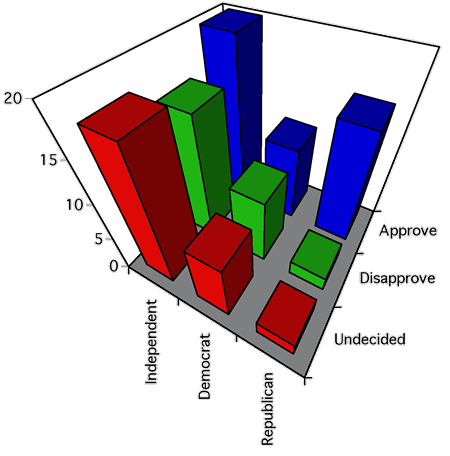

Grafische Darstellung mit einem Balkendiagramm
When bivariate categorical data are collected, but we do not want to classify them as a response and explanatory variable, one way to display the data graphically is with a 3-dimensional bar chart. For each cell in a contingency table of the data (i.e. each possible combination of values of the two variables), the bar height is given by the frequency of that combination.
Dividing these frequencies by the total number of values in the table gives the joint proportions — each resulting value is the proportion of individuals with that combination of categories. The 3-dimensional bar chart has the same shape if the bar height is proportional to these joint proportions.
Status und Alter in einer Universität
The contingency table below shows the rank and age of all academic staff in a university in the USA.
| Status | |||||
|---|---|---|---|---|---|
| Alter | Full professor |
Associate professor |
Assistant professor |
Instructor | |
| Unter 30 | 2 | 3 | 57 | 6 | |
| 30 bis 39 | 52 | 170 | 163 | 17 | |
| 40 bis 49 | 156 | 125 | 61 | 6 | |
| 50 und darüber | 220 | 83 | 39 | 4 | |
We are interested in both comparing the distributions of ages of those in different ranks, and the comparing the distributions of ranks of staff in different age groups, so there is no unique 'response' variable. The diagram below shows these data in a 3-dimensional bar chart.
Move the mouse to the middle of the diagram, then drag to rotate. (Or click the button Spin.)
Select the option Proportion from the pop-up menu to change the vertical scale. Observe that the bar chart itself is the same whether the frequencies or joint proportions are used.
Looking across individual rows (or columns) of bars shows the age distribution for different ranks (or the rank distribution for different ages).
Three-dimensional bar charts are 'interesting' but there are more informative ways to display the data.
Chartjunk and perspective displays
Beware of adding chartjunk and perspective viewpoints to the display — they just make it harder to understand the data.
The diagram below was drawn with Microsoft Excel. The perspective viewpoint may look artistic, but it certainly does not help you to understand the data!

What is the shape of the Democrat distribution?